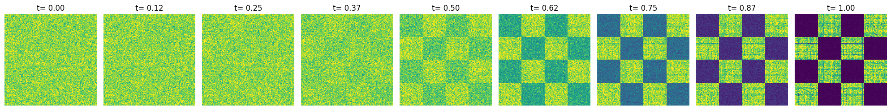
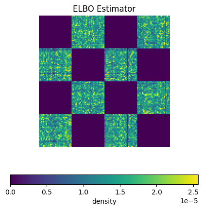

A simple 2D Discrete Flow Matching model#
This notebook trains and evaluates a simple 2D discrete FM model with \(\kappa_t = t^2\) scheduler.
Dataset: 2D discrete checkerboard Model (probability denoiser): MLP
Imports and init device#
[1]:
import time
import torch
from torch import nn, Tensor
# flow_matching
from flow_matching.path import MixtureDiscreteProbPath
from flow_matching.path.scheduler import PolynomialConvexScheduler
from flow_matching.solver import MixtureDiscreteEulerSolver
from flow_matching.utils import ModelWrapper
from flow_matching.loss import MixturePathGeneralizedKL
# visualization
import numpy as np
import matplotlib.cm as cm
import matplotlib.pyplot as plt
[2]:
if torch.cuda.is_available():
device = 'cuda:0'
print('Using gpu')
else:
device = 'cpu'
print('Using cpu.')
Using gpu
[3]:
torch.manual_seed(42)
[3]:
<torch._C.Generator at 0x7f691c1a3c50>
Dataset#
[4]:
def inf_train_gen(n_grid_points: int = 128, batch_size: int = 200, device: str = "cpu") -> Tensor:
assert n_grid_points % 4 == 0, "number of grid points has to be divisible by 4"
n_grid_points = n_grid_points // 4
x1 = torch.randint(low=0, high=n_grid_points * 4, size=(batch_size,), device=device)
samples_x2 = torch.randint(low=0, high=n_grid_points, size=(batch_size,), device=device)
x2 = (
samples_x2
+ 2 * n_grid_points
- torch.randint(low=0, high=2, size=(batch_size,), device=device) * 2 * n_grid_points
+ (torch.floor(x1 / n_grid_points) % 2) * n_grid_points
)
x_end = 1.0 * torch.cat([x1[:, None], x2[:, None]], dim=1)
return x_end.long()
Model#
[5]:
# Activation class
class Swish(nn.Module):
def __init__(self):
super().__init__()
def forward(self, x: Tensor) -> Tensor:
return torch.sigmoid(x) * x
# Model class
class MLP(nn.Module):
def __init__(
self, input_dim: int = 128, time_dim: int = 1, hidden_dim=128, length=2):
super().__init__()
self.input_dim = input_dim
self.time_dim = time_dim
self.hidden_dim = hidden_dim
self.time_embedding = nn.Linear(1, time_dim)
self.token_embedding = torch.nn.Embedding(self.input_dim, hidden_dim)
self.main = nn.Sequential(
Swish(),
nn.Linear(hidden_dim * length + time_dim, hidden_dim),
Swish(),
nn.Linear(hidden_dim, hidden_dim),
Swish(),
nn.Linear(hidden_dim, hidden_dim),
Swish(),
nn.Linear(hidden_dim, self.input_dim * length),
)
def forward(self, x, t):
t = self.time_embedding(t.unsqueeze(-1))
x = self.token_embedding(x)
B, N, d = x.shape
x = x.reshape(B, N * d)
h = torch.cat([x, t], dim=1)
h = self.main(h)
h = h.reshape(B, N, self.input_dim)
return h
Train Discrete Flow Matching model with a uniform source distribution#
[6]:
source_distribution = "uniform"
# training arguments
lr = 0.001
batch_size = 4096
iterations = 30001
print_every = 3000
vocab_size = 128
hidden_dim = 128
epsilon = 1e-3
if source_distribution == "uniform":
added_token = 0
elif source_distribution == "mask":
mask_token = vocab_size # tokens starting from zero
added_token = 1
else:
raise NotImplementedError
# additional mask token
vocab_size += added_token
# probability denoiser model init
probability_denoiser = MLP(input_dim=vocab_size, time_dim=1, hidden_dim=hidden_dim).to(device)
# instantiate a convex path object
scheduler = PolynomialConvexScheduler(n=2.0)
path = MixtureDiscreteProbPath(scheduler=scheduler)
# init optimizer
optim = torch.optim.Adam(probability_denoiser.parameters(), lr=lr)
loss_fn = MixturePathGeneralizedKL(path=path)
# train
start_time = time.time()
steps = 0
losses = []
for i in range(iterations):
optim.zero_grad()
# sample data (user's responsibility): in this case, (X_0,X_1) ~ pi(X_0,X_1)
x_1 = inf_train_gen(n_grid_points=vocab_size - added_token, batch_size=batch_size, device=device) # sample data
if source_distribution == "uniform":
x_0 = torch.randint_like(x_1, high=vocab_size)
elif source_distribution == "mask":
x_0 = torch.zeros_like(x_1) + mask_token
else:
raise NotImplementedError
# sample time (user's responsibility)
t = torch.rand(x_1.shape[0]).to(device) * (1 - epsilon)
# sample probability path
path_sample = path.sample(t=t, x_0=x_0, x_1=x_1)
# discrete flow matching generalized KL loss
logits = probability_denoiser(x=path_sample.x_t, t=path_sample.t)
loss = loss_fn(logits=logits, x_1=x_1, x_t=path_sample.x_t, t=path_sample.t)
# optimizer step
loss.backward() # backward
optim.step() # update
# log loss
if (i+1) % print_every == 0:
elapsed = time.time() - start_time
print('| iter {:6d} | {:5.2f} ms/step | loss {:8.3f} '
.format(i+1, elapsed*1000/print_every, loss.item()))
start_time = time.time()
| iter 3000 | 3.68 ms/step | loss 5.697
| iter 6000 | 3.49 ms/step | loss 5.539
| iter 9000 | 3.31 ms/step | loss 5.296
| iter 12000 | 3.39 ms/step | loss 5.520
| iter 15000 | 3.56 ms/step | loss 5.714
| iter 18000 | 3.49 ms/step | loss 5.556
| iter 21000 | 3.58 ms/step | loss 5.392
| iter 24000 | 3.49 ms/step | loss 5.354
| iter 27000 | 3.30 ms/step | loss 6.423
| iter 30000 | 3.30 ms/step | loss 5.445
Sample from trained model#
[7]:
class WrappedModel(ModelWrapper):
def forward(self, x: torch.Tensor, t: torch.Tensor, **extras):
return torch.softmax(self.model(x, t), dim=-1)
wrapped_probability_denoiser = WrappedModel(probability_denoiser)
solver = MixtureDiscreteEulerSolver(model=wrapped_probability_denoiser, path=path, vocabulary_size=vocab_size)
[8]:
nfe = 64
step_size = 1 / nfe
safe_sampling = True
n_samples = 1000000
dim = 2
if source_distribution == "uniform":
x_init = torch.randint(size=(n_samples, dim), high=vocab_size, device=device)
elif source_distribution == "mask":
x_init = (torch.zeros(size=(n_samples, dim), device=device) + mask_token).long()
else:
raise NotImplementedError
n_plots = 9
linspace_to_plot = torch.linspace(0, 1 - epsilon, n_plots)
sol = solver.sample(x_init=x_init,
step_size=step_size,
verbose=True,
return_intermediates=True,
time_grid=linspace_to_plot)
NFE: 64: 100%|██████████████████████████████████████████████████████████████████████████████████████████████████████████████████████████████████████████████████████████████| 0.9990000128746033/0.9990000128746033 [00:08<00:00, 8.13s/it]
[9]:
sol = sol.cpu().numpy()
fig, axs = plt.subplots(1, n_plots, figsize = (20, 20))
if source_distribution == "mask":
mask_tensor = torch.tensor([mask_token, mask_token]).unsqueeze(0)
for idx, step in enumerate(linspace_to_plot):
step = int(step.item() * nfe)
if source_distribution == "uniform":
sol_step = sol[idx, ...]
elif source_distribution == "mask":
sol_step = sol[idx, ...]
sol_step = sol_step[torch.ne(torch.from_numpy(sol_step), mask_tensor).all(dim=1), ...]
if sol_step.size == 0:
axs[idx].hist2d([], [], bins=10)
axs[idx].set_aspect('equal')
axs[idx].axis('off')
axs[idx].set_title('t= %.2f' % (step * step_size))
continue
else:
raise NotImplementedError
H = axs[idx].hist2d(sol_step[:, 0], sol_step[:, 1], bins=vocab_size)
cmin = 0.0
cmax = torch.quantile(torch.from_numpy(H[0]), 0.95).item()
norm = cm.colors.Normalize(vmax=cmax, vmin=cmin)
_ = axs[idx].hist2d(sol_step[:, 0], sol_step[:, 1], bins=vocab_size, norm=norm)
axs[idx].set_aspect('equal')
axs[idx].axis('off')
axs[idx].set_title(f't= {linspace_to_plot[idx].item():.2f}')
plt.tight_layout()
plt.show()

Visualize ELBO#
[10]:
n_discretization = 1024 # Time discretization of integration interval
n_samples = 10 # Number of samples to approximate the expectation on X_t ~ p_t(\cdot| x_1)
# Generalized KL function (will use it to compute the elbo)
generalized_kl_fn = MixturePathGeneralizedKL(
path = path,
reduction ='none'
)
# Grid of vocab_size X vocab_size
grid = torch.meshgrid(
torch.arange(0, vocab_size, device=device),
torch.arange(0, vocab_size, device=device),
indexing='ij'
)
x_1 = torch.stack(
[grid[0].reshape(-1), grid[1].reshape(-1)],
dim=1
)
# Time discretization
discretization = (
torch.linspace(0, 1, n_discretization + 1, device=device)[:-1]
.view(-1, 1)
.repeat(1, x_1.shape[0])
)
elbo = torch.zeros(size=(x_1.shape[0],), device=device)
with torch.no_grad():
for _ in range(n_samples):
# Lower variance estimator for time discretization
discretization = discretization + torch.rand(
size=(1, x_1.shape[0]), device=device
)
discretization = discretization % 1
discretization = discretization * (1 - epsilon)
for t in discretization:
# sample X_t ~ p_t(\cdot| x_1)
if source_distribution == "uniform":
x_0 = torch.randint(size=x_1.shape, high=vocab_size, device=device)
elif source_distribution == "mask":
x_0 = (torch.zeros(size=x_1.shape, device=device) + mask_token).long()
else:
raise NotImplementedError
x_t = path.sample(t=t, x_0=x_0, x_1=x_1).x_t
logits = probability_denoiser(x_t, t)
# compute ELBO
elbo += -generalized_kl_fn(
logits=logits, x_1=x_1, x_t=x_t, t=t
).sum(dim=1)
elbo /= n_discretization * n_samples
# Remember that log_q(x_1) >= ELBO(x_1)
probability_lower_bound = torch.exp(elbo)
[11]:
cmin = 0.0
cmax = probability_lower_bound.max().item() / 1.5
norm = cm.colors.Normalize(vmax=cmax, vmin=cmin)
plt.figure(figsize=(5, 5))
plt.imshow(
probability_lower_bound.reshape(vocab_size, vocab_size).cpu(),
origin='lower', cmap='viridis', norm=norm
)
plt.gca().axis("off")
plt.colorbar(cm.ScalarMappable(norm=norm, cmap='viridis'), ax=plt.gca(), orientation='horizontal', label='density')
plt.title("ELBO Estimator")
plt.show()

[ ]: